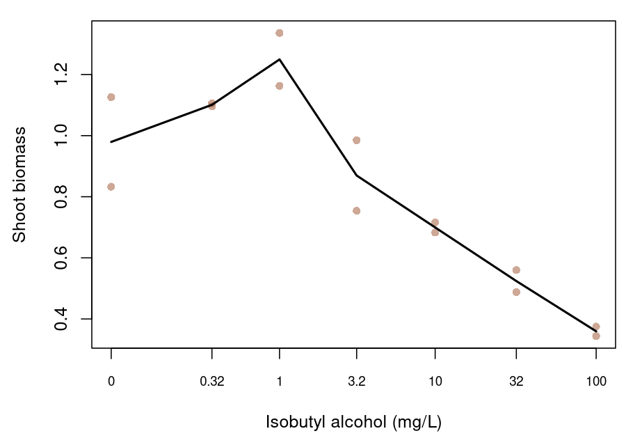

Introduction
Low concentrations of a toxicant can increase a measured biological response before higher concentrations reduce it, a biphasic pattern termed hormesis (Calabrese 2008). Environment Canada’s algal test method reserves the term for a rise that is followed by inhibition at higher concentrations, and its statistical guidance prefers the more general term low-dose stimulation, which also covers solvent effects and experimental error (Environment Canada 2007, 2005). Stimulation is frequent in the algal and aquatic plant growth tests that supply many chronic inputs to water quality guideline values. For example, Cedergreen et al. (2007) found at least one treatment above 105% of the control in 25–76% of the growth-rate curves for each of four plant and algal species, and Environment Canada describes low-dose stimulation as perhaps the most common hindrance to the analysis of well-designed sublethal toxicity tests (Environment Canada 2005). Reviews of the literature put the maximum stimulation at about 30–60% above the control (Calabrese 2008), although Canadian laboratories regard about 30% as a more likely maximum (Environment Canada 2005).
The pattern is descriptive, and it does not by itself establish a beneficial effect. A nutrient or other growth factor added with the test material can increase growth (Environment Canada 2005); for example, Negri et al. (2021) suggested that microalgae may use compounds from oil as a source of organic carbon. An organism may also allocate resources to growth at the expense of reproduction or another trait (Forbes 2000; Jager et al. 2013), and a stimulation of growth can be transient (Cedergreen 2008). Brain and Cousens (1989) also cautioned that apparent stimulation may often be an illusion where responses are standardised to a control mean that is treated as known without error, so the uncertainty in the control is part of any comparison with it. The biological meaning of a rise is therefore a question for the endpoint and the test system, and it can be kept separate from the statistical question of where a fitted curve should be read.
bayesnec fits hormetic data with two kinds of equation
(Fisher, Barneche, et al. 2024). The
threshold hormesis equations (nechorme,
nechorme4, neclinhorme,
nechormepwr, nechorme4pwr and
nechormepwr01) add a rising term below a threshold and
start a declining term at the nec parameter, whereas the
smooth equations ecxhormebc4 and ecxhormebc5
are based on the Brain–Cousens form (Brain and
Cousens 1989) and have no nec parameter. In a
monotone threshold equation such as nec3param, the fitted
response is at its control level up to the nec parameter,
which is therefore a no-effect concentration (NEC) (Fox 2010). In a threshold hormesis equation, by
contrast, a positive fitted rise places the response at nec
above the control. In neclinhorme the rise and the decline
are both linear, so a curve that declines beyond nec has
its maximum there. In nechorme and nechorme4
the rise can continue for a short distance beyond nec
before the exponential decline overtakes it, so the parameter is at or
below the peak. Reporting the nec parameter of these
equations as an NEC would therefore report a concentration at which the
response is stimulated. Below we describe what bayesnec
returns instead, and apply it to two published datasets.
Test guidelines and statistical guidance from several jurisdictions agree on two points about stimulation. First, stimulated observations are retained and modelled. OECD TG 201 calls for fitting a monotone and a hormesis model and choosing between them on fit diagnostics (OECD 2026), Environment Canada recommends fitting a hormesis model to all observations and finds no statistical basis for omitting stimulated concentrations (Environment Canada 2005), and EU and US EPA guidance advise against deleting stimulated responses (European Commission 2016; US Environmental Protection Agency 2012). Second, inhibition is measured against the true control. Environment Canada rejects smoothing the control upwards towards the stimulated treatments, because that creates a reference response not observed in the test (Environment Canada 2005), and the European Chemicals Agency advises that positive effects should not be considered in deriving an ECx (European Chemicals Agency 2008). For no-effect estimates the guidance addresses hypothesis tests only. Environment Canada treats stimulation as non-harmful, so that only effects significantly worse than the true control count in designating a no-observed-effect concentration (NOEC) (Environment Canada 2005), and the OECD recommends pairwise comparisons for nonmonotone data (OECD 2006). None of these documents defines a regression-based no-effect estimate for a hormetic curve, and the Australian and New Zealand method, which prefers the NEC and the no-significant-effect concentration (NSEC) as guideline inputs, defines the NSEC using a monotonically decreasing model (Warne et al. 2025).
A hormetic curve has at least four locations that could be reported as a no-effect or low-effect concentration (Figure 1; Table 1). The peak, and the descending return to the control that Brain and Cousens called the limiting dose for stimulation (LDS), are established hormesis quantities (Brain and Cousens 1989; Belz and Piepho 2012). A control-based ECx measures a decline from the fitted control and not from the peak (Ewijk and Hoekstra 1993; Belz and Piepho 2012). The post-peak NSEC extends the NSEC of Fisher and Fox (2023) to a hormetic curve: it is the first concentration on the declining limb at which the fitted mean falls below a lower quantile of the posterior distribution of the control. Only the ECx and the NSEC locate a decline below the control, and only the NSEC is defined by a statistical comparison with it, which makes it the regression counterpart of Environment Canada’s rule for hypothesis tests.
![Figure 1. A theoretical hormetic curve, $m(c)=1+0.25c\exp(1-c)-0.15\max(c-1,0)$, showing the four candidate locations, with each concentration given in the legend. The grey dashed lines mark the control response $m(0)=1$, a lower reference of 0.95 standing in for a lower posterior quantile of the control, and the EC10 target of 0.9. The peak is labelled with the `nec` parameter because, in a threshold hormesis equation, that parameter is where the decline starts: at the peak in `neclinhorme`, and at or just below it in `nechorme` and `nechorme4`. This applies only to the threshold hormesis equations; the smooth equations `ecxhormebc4` and `ecxhormebc5` have no `nec` parameter.](vignette-fig-estimand-plot-1.png)
Figure 1. A theoretical hormetic curve,
,
showing the four candidate locations, with each concentration given in
the legend. The grey dashed lines mark the control response
,
a lower reference of 0.95 standing in for a lower posterior quantile of
the control, and the EC10 target of 0.9. The peak is labelled with the
nec parameter because, in a threshold hormesis equation,
that parameter is where the decline starts: at the peak in
neclinhorme, and at or just below it in
nechorme and nechorme4. This applies only to
the threshold hormesis equations; the smooth equations
ecxhormebc4 and ecxhormebc5 have no
nec parameter.
| Location | Definition, for fitted mean and fitted control |
|---|---|
| Peak (M) | Concentration of the maximum fitted response |
| Control return (LDS) | First descending concentration with |
| Control-based ECx | First descending concentration with |
| Post-peak NSEC | First descending concentration at which falls to a lower posterior quantile of |
Table 1. Candidate locations on a hormetic curve for an endpoint in which a decrease represents poorer performance.
Fisher and Fox (2023) defined the NSEC as the highest concentration at which the predicted response does not differ significantly from the predicted response at zero concentration. Applied to a hormetic curve, that wording already selects a concentration on the declining limb, because a significant rise is also a significant difference from the control. The post-peak NSEC makes the comparison one-sided, so that only a decline counts as an effect. The NSEC is a statistical no-effect estimate in the sense that a NOEC is one. However, it is interpolated from the fitted curve between the tested concentrations, so it does not depend directly on where the treatments were placed, and it has a credible interval (Fisher and Fox 2023; Fisher, Fox, et al. 2024). Like a NOEC, it also has a non-zero effect associated with it (Fisher, Fox, et al. 2024), which we call the ECNSEC: the percentage decline of the fitted mean at the NSEC from the fitted control. The Australian and New Zealand method asks for this effect size to be considered, and suggests that an NSEC with an effect above 20% should probably not be used to derive a guideline value (Warne et al. 2025). The ECNSEC depends on the precision of the control response, because an imprecise control places the lower quantile further below the fitted control, and the NSEC then falls at a higher concentration.
The formal definitions, an exploratory design simulation and a fuller review of the guidance are given in the accompanying research compendium.
Implementation in bayesnec
bayesnec returns these quantities as follows.
nsec() estimates the NSEC of any equation or model set,
with the lower quantile set by sig_val (0.01 by default),
and returns the paired ECNSEC in its ecnsec_relativeP
attribute. The ECNSEC is calculated draw by draw: each posterior draw’s
fitted control is compared with the lower reference, which is crossed by
that draw’s curve at that draw’s NSEC. For a threshold hormesis
equation, nec() returns this NSEC as the no-effect
estimate, and curve_params() returns the sampled
nec parameter, which describes the peak.
ecnsec() gives the percentage decline of the fitted curve
at any concentration supplied, for example a tested concentration or a
published estimate. On a model set, nsec() mixes the NSEC
draws of the equations in proportion to their model weights. Where the
set also includes a monotone threshold equation, nec()
returns the model-averaged N(S)EC of Fisher, Fox,
et al. (2024), which mixes the sampled NEC draws of the monotone
equation with the NSEC draws of the others, and summary()
labels the estimate accordingly.
Case-study data
The first dataset contains 65 individual specific growth rates of the
marine dinoflagellate symbiont Cladocopium goreaui, with ten
no-WAF controls and five replicates at each of 11 exposure
concentrations, released with Negri et al.
(2021) in a public
workbook (Australian Institute of Marine
Science 2020). Fisher, Fox, et al.
(2024) excluded this series from their comparison of no-effect
estimators because of its hormetic shape. The workbook codes the total
aromatic hydrocarbon (TAH) concentration of the controls as 1
g/L,
so we subtracted 1
g/L
from each concentration to place the controls at zero and report
estimates in mg/L TAH relative to this source-coded control. The data
record labels the workbook CC
BY-NC 3.0 Australia, so its observations are not redistributed with
this GPL-2 package. data-raw/hormesis_negri.R in the
package source downloads the workbook and writes the observations
locally, and the code below is therefore shown but not evaluated.
The second dataset is the lettuce series distributed
with drc (Ritz et al. 2015; Ewijk
and Hoekstra 1993): shoot biomass after 21 days of exposure to
isobutyl alcohol, with two observations at each of seven concentrations
from zero to 100 mg/L (Figure 2). It is distributed with
bayesnec as
inst/extdata/hormesis_lettuce_1993.csv. Its small sample
and terrestrial endpoint make it a methods example and not an aquatic
guideline input.

Figure 2. The 14 individual lettuce shoot biomass observations. Concentrations are labelled in mg/L on a logarithmic axis offset by 0.1 mg/L, and the line joins treatment means for visual orientation; it is not a fitted model.
Fitting the candidate sets
Both datasets were fitted with a Gaussian family and an identity
link, which permits the negative fitted values that the marine growth
rates require. The marine set contains five hormesis equations
(neclinhorme, nechorme,
nechorme4, ecxhormebc4 and
ecxhormebc5) and the monotone threshold equation
neclin as a comparator, on recorded concentration. The
lettuce set contains the five hormesis equations with
log(conc + 0.1) as the predictor, because exposure spans
more than two orders of magnitude; the offset retains the control, and
bayesnec returns estimates in mg/L. The candidate equations
differ in how their declining limbs end: nechorme and
ecxhormebc4 decline towards zero, nechorme4
and ecxhormebc5 estimate a lower asymptote that can be
negative, and neclin and neclinhorme decline
linearly. The power threshold equations were not fitted.
nechormepwr and nechorme4pwr add one response
unit at a marine concentration of 1 mg/L, far more than the observed
rise, and their fractional powers are undefined at the negative
transformed lettuce control, whereas nechormepwr01 is
bounded between zero and one and so cannot represent negative growth or
lettuce biomass above one.
library(bayesnec)
negri <- read.csv("ignore/hormesis_data/hormesis_negri_2021.csv")
negri$conc <- (negri$source_conc_ug_l_tah - 1) / 1000
lettuce <- read.csv(system.file("extdata", "hormesis_lettuce_1993.csv",
package = "bayesnec"))Each candidate set is built with one bnec() call.
ecxhormebc5 is fitted separately because it starts from
zero initial values, and c() adds it to the set.
marine_set <- bnec(sgr ~ crf(conc, model = c("neclin", "neclinhorme",
"nechorme", "nechorme4",
"ecxhormebc4")),
data = negri, family = gaussian(), chains = 4, cores = 4,
iter = 2000, warmup = 1000, seed = 570,
control = list(adapt_delta = 0.995, max_treedepth = 12))
# The default initial-value search fails for ecxhormebc5 on these data.
marine_bc5 <- bnec(sgr ~ crf(conc, model = "ecxhormebc5"), data = negri,
family = gaussian(), chains = 4, cores = 4, iter = 2000,
warmup = 1000, seed = 570, init = 0,
control = list(adapt_delta = 0.995, max_treedepth = 12))
set.seed(570)
marine_set <- c(marine_set, marine_bc5)
lettuce_set <- bnec(weight ~ crf(log(conc + 0.1),
model = c("neclinhorme", "nechorme",
"nechorme4", "ecxhormebc4")),
data = lettuce, family = gaussian(), chains = 4,
cores = 4, iter = 2000, warmup = 1000, seed = 570,
control = list(adapt_delta = 0.99, max_treedepth = 12))
lettuce_bc5 <- bnec(weight ~ crf(log(conc + 0.1), model = "ecxhormebc5"),
data = lettuce, family = gaussian(), chains = 4,
cores = 4, iter = 2000, warmup = 1000, seed = 570,
init = 0,
control = list(adapt_delta = 0.999, max_treedepth = 12))
set.seed(570)
lettuce_set <- c(lettuce_set, lettuce_bc5)check_sampling() tests each equation against a screen of
at most 1.01, an effective sample size of at least 400 and no divergent
transitions (Vehtari et al. 2021). An
equation that failed was not abandoned: it was refitted for longer,
under the same prior and with a higher adapt_delta, and
screen_models() dropped it only if the refit also failed.
The model weights are pseudo-BMA weights computed from leave-one-out
predictive densities (Vehtari et al. 2017; Yao et
al. 2018), and for lettuce amend() recomputes them
with exact refits for the influential observations.
The code below shows these steps on whole sets. The estimates
reported here come from analysis/hormesis_case_fits.R in
the research
compendium, which fits each equation separately with the settings
recorded there.
check_sampling(marine_set, divergence_cutoff = 0)
check_sampling(lettuce_set, divergence_cutoff = 0)
# thin = 2 keeps 4000 draws, as in the first fits, so that the model weights
# compare leave-one-out scores from equal numbers of draws.
refit_longer <- function(set, model, adapt_delta) {
update(pull_out(set, model = model), iter = 6000, warmup = 4000, thin = 2,
seed = 570, refresh = 0,
control = list(adapt_delta = adapt_delta, max_treedepth = 15))
}
# c() keeps the first copy of an equation it is given twice, so the refits
# come first.
set.seed(570)
marine_set <- c(refit_longer(marine_set, "neclinhorme", 0.999),
refit_longer(marine_set, "nechorme4", 0.995),
refit_longer(marine_set, "ecxhormebc5", 0.999),
marine_set)
set.seed(570)
lettuce_set <- c(refit_longer(lettuce_set, "nechorme4", 0.999),
refit_longer(lettuce_set, "ecxhormebc4", 0.9999),
refit_longer(lettuce_set, "ecxhormebc5", 0.9999),
lettuce_set)
set.seed(570)
marine_set <- screen_models(marine_set, divergence_cutoff = 0)
set.seed(570)
lettuce_set <- screen_models(lettuce_set, divergence_cutoff = 0)
set.seed(570)
lettuce_set <- amend(lettuce_set,
loo_controls = list(fitting = list(reloo = TRUE)))The estimates are then extracted from each set.
summary() prints the model weights with the no-effect
estimate, and the NSEC of a single equation is obtained from the set
with pull_out().
summary(marine_set)
curve_params(marine_set)
marine_nsec <- nsec(marine_set, sig_val = 0.01)
marine_nsec
attr(marine_nsec, "ecnsec_relativeP")
nsec(pull_out(marine_set, model = "neclinhorme"), sig_val = 0.01)
ecx(marine_set, ecx_val = 10)
# The set includes neclin, so nec() returns the N(S)EC, which mixes the NEC
# draws of neclin with the NSEC draws of the other equations.
nec(marine_set)
# The decline of the averaged curve at a tested concentration.
ecnsec(marine_set, nsec = 2.33)
autoplot(marine_set, model = marine_set$success_models)
summary(lettuce_set)
curve_params(lettuce_set)
lettuce_nsec <- nsec(lettuce_set, sig_val = 0.01)
lettuce_nsec
attr(lettuce_nsec, "ecnsec_relativeP")
ecx(lettuce_set, ecx_val = 10)
autoplot(lettuce_set, model = lettuce_set$success_models, x_scale = "fitted")Cladocopium goreaui growth rates
The ten controls had a mean specific growth rate of 0.108 d-1. The treatment means at 0.583 and 1.17 mg/L TAH were 22% and 18% above the control mean, and the means at 1.75, 2.33 and 2.92 mg/L were 85%, 84% and 79% of it. Growth then declined steeply, to 48% of the control at 3.50 mg/L, and the mean growth rates at 4.67 and 5.84 mg/L were negative. The series therefore shows hormesis in Environment Canada’s sense (Environment Canada 2007), a rise at the two lowest concentrations followed by inhibition, with a plateau about 15% below the control across the next three treatments.
The screen excluded nechorme4, and Figure 3 shows the
remaining five equations with their model weights (Table 2). Most of the
weight went to ecxhormebc5 (0.776) and
neclinhorme (0.191): the lower asymptote of
ecxhormebc5 follows the negative growth rates at the
highest concentrations, whereas nechorme and
ecxhormebc4 level off at zero.
neclinhorme reproduces the hormesis. Its fitted mean at
0.583 and 1.17 mg/L is 114% of its fitted control, and its curve peaks
at 0.914 mg/L, with a rise of 22% (95% credible interval 1.5–39%).
curve_params() gives its sampled nec parameter
as 0.918 mg/L (0.559–1.46), which is that peak: a concentration at which
the fitted mean is well above the control, and which nec()
therefore does not return as a no-effect estimate.
ecxhormebc5 shows little rise (a median of 0.21%), and so
does the model-averaged curve, most of whose weight it has.
Under the post-peak NSEC, the two equations with 0.967 of the weight
nonetheless give similar no-effect estimates: 2.00 mg/L (1.80–2.18) for
neclinhorme and 2.09 mg/L (1.73–2.41) for
ecxhormebc5 (Table 2). Each NSEC is read on the declining
limb against the equation’s own control, so it depends on where the
curve falls below its lower reference and not on whether the curve first
rises. These data therefore suggest that the NSEC can be estimated
consistently across equations that represent the rise differently,
whereas the nec parameter exists only in the threshold
equations and marks a peak only where a rise is fitted. The
model-averaged NSEC from nsec(marine_set) is 2.07 mg/L
(1.74–2.42), between the 1.75 and 2.33 mg/L treatments, with an ECNSEC
of 8.62% (1.46–15.2%). In each equation’s panel the ECNSEC is the gap
between the dashed and dotted lines; ten controls estimate the control
precisely, so the gap is small and the model-averaged NSEC is just below
the model-averaged EC10 of 2.16 mg/L (1.71–2.58).
nec(marine_set) returns the N(S)EC of 2.07 mg/L, equal to
the NSEC to three figures, because neclin has 0.002 of the
weight.
![Figure 3. Model-averaged (first panel) and candidate fits to individual *C. goreaui* growth rates, with each equation's model weight in its panel title. Each panel shows the posterior median fitted mean (line) and its 95% credible band (shading), the median fitted control (dashed line), the lower 0.01 quantile of the posterior of the fitted control (dotted line), and the NSEC as a purple line (median) with purple shading (95% credible interval). The model-average panel has no dotted line, because its NSEC mixes the equations' posterior draws, each read against its own control. Black points are treatment means calculated from the Negri et al. (2021) workbook (CC BY-NC 3.0 Australia); individual observations are not redistributed with the package. TAH concentrations are relative to the source-coded control.](vignette-fig-example10-marine-fits.png)
Figure 3. Model-averaged (first panel) and candidate fits to individual C. goreaui growth rates, with each equation’s model weight in its panel title. Each panel shows the posterior median fitted mean (line) and its 95% credible band (shading), the median fitted control (dashed line), the lower 0.01 quantile of the posterior of the fitted control (dotted line), and the NSEC as a purple line (median) with purple shading (95% credible interval). The model-average panel has no dotted line, because its NSEC mixes the equations’ posterior draws, each read against its own control. Black points are treatment means calculated from the Negri et al. (2021) workbook (CC BY-NC 3.0 Australia); individual observations are not redistributed with the package. TAH concentrations are relative to the source-coded control.
| Equation | Model weight |
nec parameter, mg/L |
Rise at peak, % | NSEC, mg/L | ECNSEC, % | EC10, mg/L |
|---|---|---|---|---|---|---|
| Model average | 1 | — | 0.78 (0–33) | 2.07 (1.74–2.42) | 8.62 (1.46–15.2) | 2.16 (1.71–2.58) |
neclin |
0.002 | 1.43 (1.10–1.94) (NEC) | 0 | 1.71 (1.42–2.04) | 7.90 (1.42–13.2) | 1.77 (1.49–2.23) |
neclinhorme |
0.191 | 0.918 (0.559–1.46) | 22 (1.5–39) | 2.00 (1.80–2.18) | 10.6 (2.25–17.8) | 1.98 (1.65–2.28) |
nechorme |
<0.001 | 2.83 (2.64–3.12) | 0.43 (0.001–5.7) | 2.90 (2.73–3.15) | 7.92 (1.20–13.3) | 2.91 (2.75–3.17) |
ecxhormebc4 |
0.031 | — | 0.056 (0–3.7) | 2.33 (1.82–2.66) | 6.94 (0.929–12.4) | 2.50 (2.08–2.85) |
ecxhormebc5 |
0.776 | — | 0.21 (0–15) | 2.09 (1.73–2.41) | 8.37 (1.58–13.7) | 2.19 (1.74–2.57) |
Table 2. Pseudo-BMA model weights and estimates for the C.
goreaui candidate set, as posterior medians with 95% credible
intervals, with TAH concentrations relative to the source-coded control.
The rise at peak is the maximum of each draw’s curve above that draw’s
fitted control, and the ECNSEC is the decline from the fitted control at
the NSEC, calculated draw by draw. For monotone neclin the
nec parameter is its NEC.
The neclin panel shows the consequence of leaving the
rise out of a candidate set. Its flat upper limb is fitted to the
control and the stimulated treatments together, so its fitted control
(0.119 d-1) is 10% above the observed control mean, and its
NSEC (1.71 mg/L) and EC10 (1.77 mg/L) are the lowest in Table 2. This is
likely to occur whenever a monotone equation is fitted to a stimulated
series, and is in effect the upward smoothing of the control that
Environment Canada rejects (Environment Canada
2005). In these data the monotone equation received 0.002 of the
model weight.
Negri et al. (2021) reported an NEC of
3.1 mg/L TAH and an EC10 of 2.67 mg/L for these data from fits with
jagsNEC.
Lettuce shoot biomass
The lettuce control observations were 0.833 and 1.126 (a mean of 0.98). The means at 0.32 and 1 mg/L were 12% and 28% above the control mean, although the controls differed from each other by more than the rise to 1 mg/L (0.29 against 0.27), so the control response is imprecise relative to the rise. Biomass then declined, to 89% of the control mean at 3.2 mg/L, 71% at 10 mg/L and 37% at 100 mg/L.
The screen excluded ecxhormebc5, and Figure 4 shows the
remaining four equations with their model weights (Table 3). The three
threshold hormesis equations had 0.932 of the weight, and each of their
curves rises above its fitted control to a peak near 1 mg/L, with
sampled nec parameters of 0.919 mg/L for
neclinhorme, 1.10 mg/L for nechorme and 1.12
mg/L for nechorme4. The model-averaged curve peaks at 1.02
mg/L, 11% (0.0004–46%) above its fitted control.
![Figure 4. Model-averaged (first panel) and candidate fits to lettuce shoot biomass, with each equation's model weight in its panel title. Each panel shows the posterior median fitted mean (line) and its 95% credible band (shading), the median fitted control (dashed line), the lower 0.01 quantile of the posterior of the fitted control (dotted line), and the NSEC as a purple line (median) with purple shading (95% credible interval). The model-average panel has no dotted line, because its NSEC mixes the equations' posterior draws, each read against its own control. Pale points are individual observations and black points are treatment means. Concentrations are labelled in mg/L on the axis of Figure 2.](vignette-fig-example10-lettuce-fit.png)
Figure 4. Model-averaged (first panel) and candidate fits to lettuce shoot biomass, with each equation’s model weight in its panel title. Each panel shows the posterior median fitted mean (line) and its 95% credible band (shading), the median fitted control (dashed line), the lower 0.01 quantile of the posterior of the fitted control (dotted line), and the NSEC as a purple line (median) with purple shading (95% credible interval). The model-average panel has no dotted line, because its NSEC mixes the equations’ posterior draws, each read against its own control. Pale points are individual observations and black points are treatment means. Concentrations are labelled in mg/L on the axis of Figure 2.
| Equation | Model weight |
nec parameter, mg/L |
Rise at peak, % | NSEC, mg/L | ECNSEC, % | EC10, mg/L |
|---|---|---|---|---|---|---|
| Model average | 1 | — | 11 (0.0004–46) | 5.07 (2.90–9.90) | 20.0 (4.19–30.2) | 3.14 (1.02–8.25) |
neclinhorme |
0.238 | 0.919 (0.201–2.46) | 5.3 (0.003–38) | 5.90 (2.98–10.2) | 20.7 (4.66–31.0) | 3.01 (0.804–8.88) |
nechorme |
0.435 | 1.10 (0.484–2.87) | 15 (0.006–47) | 4.74 (2.95–8.11) | 19.0 (4.09–29.3) | 3.17 (1.34–7.71) |
nechorme4 |
0.259 | 1.12 (0.337–3.42) | 14 (0.009–49) | 4.85 (2.73–8.66) | 20.2 (4.40–30.1) | 3.05 (1.31–7.74) |
ecxhormebc4 |
0.068 | — | 2.5 (0–33) | 6.97 (2.89–13.9) | 23.0 (4.89–35.0) | 2.94 (0.344–10.4) |
Table 3. Pseudo-BMA model weights and estimates for the lettuce candidate set, as posterior medians with 95% credible intervals. The rise at peak is the maximum of each draw’s curve above that draw’s fitted control, and the ECNSEC is the decline from the fitted control at the NSEC, calculated draw by draw.
The ECNSEC of each lettuce fit is set by its control. For each posterior draw it equals (control − reference)/control, where the reference is the lower 1% quantile of the posterior of the fitted control, so in Figure 4 it is the gap between the dashed and dotted lines, expressed as a percentage of the dashed line. The lettuce control observations differ by 0.29, more than the observed rise to 1 mg/L, and with only two observations the posterior of the fitted control is wide. Its lower 1% quantile is therefore about 20% below the fitted control (0.822 against 1.03 for the model average), and the model-averaged ECNSEC is 20.0% (4.19–30.2%), against 8.62% for the ten C. goreaui controls. The model-averaged NSEC of 5.07 mg/L (2.90–9.90) is the concentration at which the averaged curve has declined by that amount, between the 3.2 and 10 mg/L treatments. Because that decline is more than 10%, the NSEC is beyond the model-averaged EC10 of 3.14 mg/L, whereas for C. goreaui the NSEC (2.07 mg/L) is just below the EC10 (2.16 mg/L). The Australian and New Zealand method screens NOECs and NSECs on this effect size, and states that any with an effect size above 20% should probably not be used to derive guideline values (Warne et al. 2025). The lettuce NSEC is at that limit, with a median ECNSEC of 20.0% and an upper credible bound of 30.2%, so it may not be suitable as a guideline input under that screen. A larger control group would narrow the posterior of the fitted control, and so lower both the ECNSEC and the NSEC (Fisher and Fox 2023).
Reporting a no-effect estimate for a hormetic curve
In both datasets the threshold hormesis equations placed their
nec parameter at the rise. Reported as a no-effect
concentration, that parameter would have given 0.92 mg/L TAH for C.
goreaui and 0.92–1.12 mg/L for lettuce, concentrations at which the
fitted response is above the control. A guideline data table that lists
only a concentration cannot show whether it came from a peak parameter,
an NSEC or a mixed N(S)EC. We therefore recommend reporting the NSEC of
a hormetic curve with its ECNSEC, the sig_val it was
calculated at, and the equation or model set it was estimated from. The
nec parameter of a threshold hormesis equation, from
curve_params(), is better reported as a description of the
shape of the curve. Where the ECNSEC is large, as an imprecise control
makes it (for example, the two lettuce controls), the NSEC can be
compared with a relevant ECx and the lower value adopted (Fisher, Fox, et al. 2024), and under the
Australian and New Zealand method an NSEC with an effect above 20%
should probably not be used (Warne et al.
2025). An estimate censored above the tested concentrations, or
one that depends on a poorly fitting declining limb, should be reported
as unresolved.
These choices concern where a fitted curve is read, and they do not establish whether stimulation is beneficial. A growth-based NSEC could miss an adverse effect if increased growth draws resources from reproduction (Forbes 2000; Jager et al. 2013), and a stimulus from organic carbon in a mixture, as Negri et al. (2021) suggested for the marine series, may change with receiving-water chemistry. The endpoint, the true control and other available endpoints should therefore be examined before a hormetic NSEC is used as a guideline input.
Reproducibility
The candidate sets were fitted outside the vignette build, because
the marine observations are not redistributed and the fits are slow. The
full run, including the import of the marine workbook, the sampler
screen and the figures, is analysis/hormesis_case_fits.R in
the research
compendium, and analysis/hormesis_fit_plots.R there
recreates Figures 3 and 4 and the estimates in Tables 2 and 3 from the
saved fits. Each fit used seed = 570, and the weights were
computed after set.seed(570). The fits used
bayesnec at commit 9b99f600 with R 4.6.1,
brms 2.23.0 and rstan 2.32.7. The lettuce
observations in Figure 2 are read from
inst/extdata/hormesis_lettuce_1993.csv.